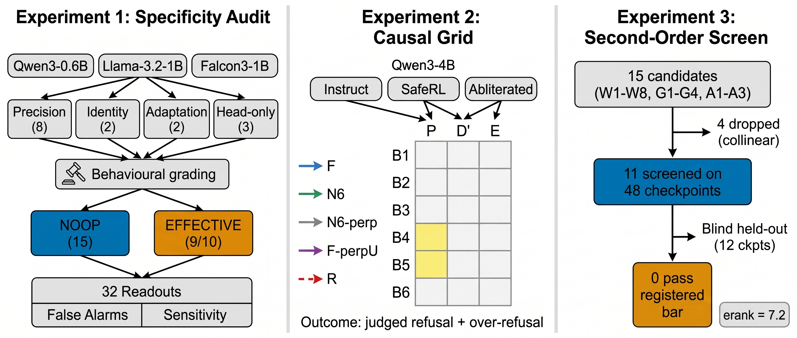
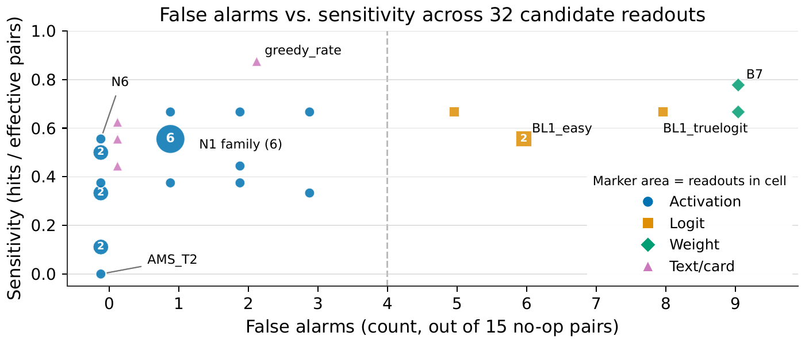
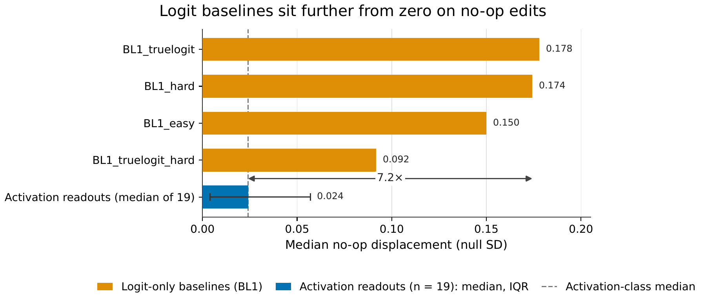
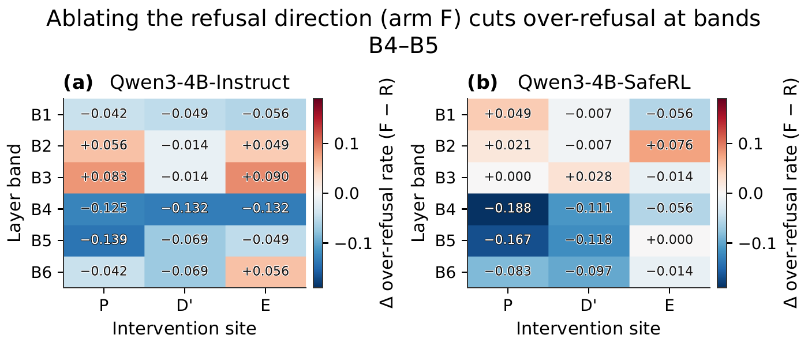
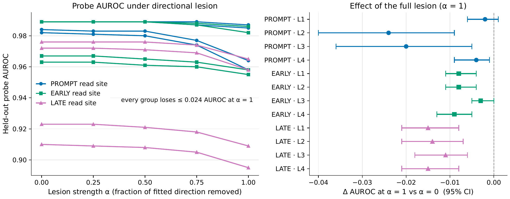

Specificity and Causality Audits for Activation-Based Safety Readouts
Can you tell whether a language model is safe by reading its internal activations, without running a full behavioural benchmark? We tested 32 candidate readouts against model modifications that provably do not change safety behaviour. On 24 such no-op edits across three model families, mid-layer activation readouts produced zero false alarms; the standard logit-gap baseline produced 11 (McNemar p = 0.001). A causal intervention grid on Qwen3-4B then showed that the refusal direction is linearly readable from activations but removing it at any single site does not change the model's judged refusal: it rewrites its refusal in different words. No second-order readout survived blind held-out confirmation at the pre-registered bar, and the effective rank of the score matrix (7.2) rules out reducing all readouts to a single number.
Contributions
Activation readouts have far fewer false alarms than the logit baseline
On 24 behaviourally graded no-op edits spanning numerical precision, identity transforms, non-safety adaptation and head-only edits, geometric activation readouts produce zero false alarms while the final-layer logit gap produces 11 (exact McNemar p = 0.001). On the core 15-pair panel, mid-layer readouts fire on at most 3 no-ops; the logit baseline fires on 6–8.
The refusal direction is decodable but causally inert at the prompt site
In a 6-band × 3-site causal grid, removing the refusal direction at the last prompt token does not change judged refusal in any of 18 cells (max |effect| = 0.056, TOST p < 10−23). The model rewrites its refusal in different words. The causal lever is over-refusal on benign-borderline prompts.
Abliteration both rotates and shrinks the refusal representation
Global removal of the refusal direction at band B4 reduces instruct refusal from 0.92 to 0.67; SafeRL resists with a difference-in-differences of +0.23 [0.08, 0.38]. The cross-model cosine drops from 0.999 at B1 to 0.31 at B5, and N1 and N6 drop by 71% and 57% from instruct to the abliterated checkpoint.
Second-order readouts index trade-off position, not safety level
Fifteen candidate readouts are screened on 48 checkpoints; none of 11 survivors passes blind held-out confirmation. Every readout sign is inverted relative to its registered prediction: they track where a model sits on the refusal–permissiveness spectrum, not a safety level per se. The effective rank of the score matrix is 7.2, ruling out a one-coordinate summary.
Method

All three experiments share the same behavioural grading pipeline. Each checkpoint is evaluated on 85 harmful prompts and 83 benign prompts with an LLM judge (Gemini 2.5 Flash Lite; split-half reliability 0.96 for harmful compliance, 0.94 for over-refusal). Behavioural labels are frozen before any readout is computed, enforced by a SHA-256 hash chain.
Experiment 1: Specificity Audit
Parent–child model pairs are constructed across three families (Qwen3-0.6B, Llama-3.2-1B, Falcon3-1B) with modifications in four categories: numerical precision (8 pairs), identity transforms (2), non-safety adaptation (2) and head-only edits (3). Behavioural grading yields 15 no-ops and 9 effective changes. For each pair, 32 candidate readouts are computed from residual-stream activations, logits, weights and text outputs. A readout fires a false alarm if its paired-bootstrap CI excludes zero in the expected direction on a no-op pair.
Experiment 2: Causal Intervention Grid
Three Qwen3-4B variants (Instruct, SafeRL, abliterated) are tested in a grid crossing six depth bands (B1–B6, each one-sixth of the 36-layer stack) with three intervention sites: last prompt token (P), first decode positions (D'), and the early response window (E). Each cell runs five arms including a matched random control. A cell counts as causal only if the treatment differs from the random control after Holm–Bonferroni correction at α = 0.05 over all 18 cells.
Experiment 3: Second-Order Readout Screen
Fifteen candidates measuring write-handle redundancy (W1–W8), dimensionless geometry (G1–G4) and competing mechanisms (A1–A3) are screened on 48 checkpoints from 7 lineages. Four are dropped for collinearity with the logit baseline. The remaining 11 are tested on 12 blind held-out checkpoints from 7 non-overlapping lineages. Confirmation requires the candidate's correlation with over-refusal to exceed the logit baseline by a margin whose CI excludes zero.
Results
Geometric activation readouts produce zero false alarms on the pooled 24-pair set; the logit-gap baseline produces 11. On the core 15-pair panel, the best activation readouts fire on at most 3 no-ops, while the logit gap fires on 6–8 out of 15. The weight-space cosine B7 fires on 9 of 15: every dtype cast triggers it.
The logit gap operates at the decision boundary where small perturbations produce large score changes. Mid-layer activation readouts measure the geometry of the representation space, which is more stable under numerical-precision and identity modifications. Final-layer logits amplify implementation-irrelevant variation.
Removing the refusal direction at any single site produces no causal cells for judged refusal on harmful prompts across all 18 cells, for both the instruct and SafeRL models (TOST p < 10−23). A keyword refusal proxy drops from 0.79 to 0.15 under the intervention, which would appear as a successful jailbreak under keyword-based evaluation. The LLM judge finds no change: the model replaces its refusal phrasing, not its policy.
The single surviving cell targets over-refusal on benign-borderline prompts, not compliance with harmful requests. Over-refusal drops by 0.12–0.19 at bands B4–B5 in both models. Neither model shows a causal cell for judged refusal on harmful prompts.
Global removal of the refusal direction at band B4 reduces instruct refusal from 0.917 to 0.667. SafeRL resists. In the abliterated checkpoint, the cross-model direction cosine drops from 0.999 at B1 to 0.306 at B5, and N1 and N6 drop by 71% and 57% from instruct to abliterated, consistent with a representation that is both rotated and shrunk.
Of 15 candidates, 4 are dropped for collinearity. None of the remaining 11 passes the registered rule on 12 blind held-out checkpoints. W3 achieves ρ = −0.94 against over-refusal (n = 6); G4 achieves ρ = −0.82 (n = 12). The minimum detectable effect at n = 12 is 0.73, exceeding every observed margin. Every readout sign is inverted relative to registration: they track trade-off position, not safety level.
The 15-candidate × 48-checkpoint score matrix has an effective rank that rules out a one-coordinate summary. The leading singular vector's cosine with the logit baseline is 0.64, below the 0.80 threshold for a one-coordinate interpretation. An honest estimate of the panel size needed for reliable ranking is 30–150 checkpoints, depending on the true effect size.
Figures




Limitations
- Scale. The specificity audit uses three families at 0.6–1.7B parameters. Larger models may have different false-alarm profiles. The 15 no-ops span four categories of deployment-relevant modifications but do not cover every possible perturbation.
- Underpowered comparisons. The per-readout false-alarm comparison on the core 15-pair panel (4/12 vs 1/12 on non-degenerate pairs) has a minimum attainable p of 0.0625. The pooled 24-pair comparison is powered (McNemar p = 0.001) but pools across an extended set. The second-order readout screen's minimum detectable effect (0.73) exceeds every observed margin.
- Single architecture for the causal grid. The causal experiment uses only Qwen3-4B. The decodable-but-inert finding may not generalise to architectures with different layer counts or attention patterns.
- Judge limitations. All behavioural outcomes depend on an LLM judge with split-half reliability of 0.96 (harmful compliance) and 0.94 (over-refusal). The keyword proxy and the judge disagree substantially (κ = 0.50 for instruct, κ ≈ 0 for SafeRL).
- No surviving candidate. No readout passes the full pre-registered selection rule at the tested panel sizes. At n = 10–12, the registered bar is unattainable for the observed effect sizes.
- Probe ceiling. The probe AUROC is at ceiling (1.000) in the unperturbed control, so its survival under the lesion is uninformative about whether the lesion removed safety-relevant information.